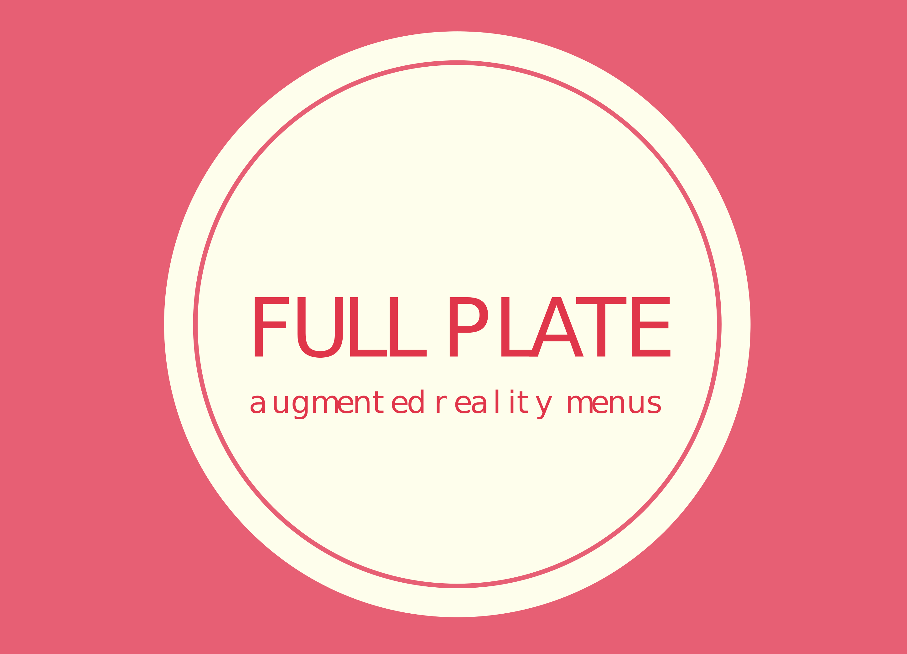

<!doctype html><html class="a-fullscreen"><head><title>Full Plate</title><meta name="viewport" content="width=device-width,initial-scale=1,maximum-scale=1,shrink-to-fit=no,user-scalable=no,minimal-ui,viewport-fit=cover"><meta name="mobile-web-app-capable" content="yes"><meta name="theme-color" content="black"><link rel="preconnect" href="https://fonts.gstatic.com"><link href="https://fonts.googleapis.com/css2?family=Archivo+Black&display=swap" rel="stylesheet"><script src="https://ajax.googleapis.com/ajax/libs/jquery/3.5.1/jquery.min.js"></script><script async="" crossorigin="use-credentials" src="//apps.8thwall.com/xrweb?appKey=vj2Xh8fE4KE3SPsJojakHtyILM94Zy0x2Es02MQv7f9iG4Aokad2kbsflGDUgESIkQjFZ5&s=1"></script><script crossorigin="anonymous" src="//cdn.8thwall.com/web/aframe/8frame-1.1.0.min.js"></script><script crossorigin="anonymous" src="//cdn.8thwall.com/web/aframe/aframe-extras-6.1.1.min.js"></script><script crossorigin="anonymous" src="//cdn.8thwall.com/web/xrextras/xrextras.js?s=1"></script><meta name="8thwall:renderer" content="aframe:1.1.0"><meta name="8thwall:package" content="@8thwall.xrextras"><script src="../js/app.js?t=1623050808175"></script><link rel="stylesheet" href="https://cdnjs.cloudflare.com/ajax/libs/ionicons/2.0.1/css/ionicons.min.css"><link rel="stylesheet" type="text/css" href="https://fonts.googleapis.com/css?family=Lato:400,300,700"><link rel="stylesheet" href="https://cdnjs.cloudflare.com/ajax/libs/normalize/5.0.0/normalize.min.css"><link rel="stylesheet" type="text/css" href="../css/index.css?t=1623050808175"><script>if (location.protocol !== 'https:') {
            location.replace(`https:${location.href.substring(location.protocol.length)}`);
        }</script></head><body><div><span class="menu" onclick="toggleMenu()"><i class="ion-ios-paper-outline"></i></span></div><aside class="sidebar close"><header></header><nav class="sidebar-nav"><ul><li><a class="item noselect"><i class="ion-pizza"></i> <span>Meal Category #1</span></a><ul class="nav-flyout"><li><a class="menu-item noselect" menu-id="1"><i class="ion-ios-circle-filled"></i>Meal #1</a></li><li><a class="menu-item noselect" menu-id="2"><i class="ion-ios-circle-filled"></i>Meal #2</a></li><li><a class="menu-item noselect" menu-id="3"><i class="ion-ios-circle-filled"></i>Meal #3</a></li></ul></li><li><a class="item noselect"><i class="ion-coffee"></i> <span class="">Meal Category #2</span></a><ul class="nav-flyout"><li><a class="menu-item noselect" menu-id="4"><i class="ion-ios-circle-filled"></i>Meal #1</a></li><li><a class="menu-item noselect" menu-id="5"><i class="ion-ios-circle-filled"></i>Meal #2</a></li><li><a class="menu-item noselect" menu-id="6"><i class="ion-ios-circle-filled"></i>Meal #3</a></li></ul></li><li><a onclick="closeMenu()" class="noselect"><i class="ion-ios-undo"></i> <span class="">Back</span></a></li></ul></nav></aside><a-scene xrextras-gesture-detector xrextras-almost-there xrextras-loading xrextras-runtime-error renderer="colorManagement: true" xrweb><a-assets> </a-assets><a-camera id="camera" position="0 8 0" raycaster="objects: .cantap" cursor="fuse: false; rayOrigin: mouse;"></a-camera><a-image id="cursor" plate rotation="-90 0 0" plate scale="3 3 3" src="#reticleLoading" transparent="true"></a-image><a-entity light="
            type: directional; 
            intensity: 0.8;
            castShadow: true;
            shadowMapHeight:2048;
            shadowMapWidth:2048;
            shadowCameraTop: 20;
            shadowCameraBottom: -20;
            shadowCameraRight: 20;
            shadowCameraLeft: -20;
            target: #camera" xrextras-attach="target: camera; offset: 8 15 4" position="1 4.3 2.5" shadow></a-entity><a-light type="ambient" intensity="0.5"></a-light><a-box id="ground" scale="1000 2 1000" position="0 -1 0" material="shader: shadow;" shadow></a-box></a-scene></body></html>